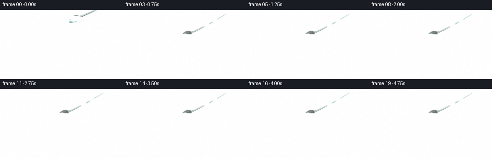
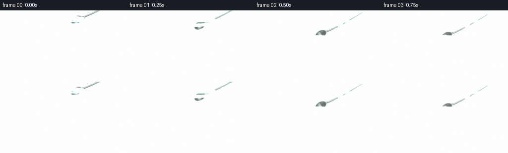

CODING AGENTS AS PIXEL WORLD MODELS
traex/DeepSeek-V4.1-Flash · mechanics_0008
点击播放 · 原生 RGB 像素
逐轮保存的候选
回放视频、检查图与代码变化。
每份候选均可单独播放。实际图片检查记录在下方工具轨迹中。
候选 01播放与检查图
点击播放 · 原生 RGB 像素


展开代码变化
--- 上一保存版本
+++ 本次保存版本
@@ -0,0 +1,457 @@
+from __future__ import annotations
+
+import math
+from pathlib import Path
+
+import cv2
+import numpy as np
+from PIL import Image, ImageDraw
+
+import artifact_io
+
+
+CASE_DIR = Path(__file__).resolve().parent
+WIDTH = 256
+HEIGHT = 144
+FRAMES = 20
+SS = 4
+RW = WIDTH * SS
+RH = HEIGHT * SS
+
+
+def clamp(value, lo=0.0, hi=1.0):
+ return np.clip(value, lo, hi)
+
+
+def smoothstep(value):
+ value = clamp(value)
+ return value * value * (3.0 - 2.0 * value)
+
+
+def ease_in_out(value):
+ value = clamp(value)
+ return 0.5 - 0.5 * np.cos(np.pi * value)
+
+
+def rgba(color, alpha):
+ return tuple(int(round(v)) for v in color) + (int(round(alpha * 255)),)
+
+
+def blur(array, sigma):
+ return cv2.GaussianBlur(array, (0, 0), sigma, borderType=cv2.BORDER_REFLECT)
+
+
+def composite(image, color, alpha):
+ alpha = np.asarray(alpha, dtype=np.float32)
+ if alpha.ndim == 2:
+ alpha = alpha[..., None]
+ color = np.asarray(color, dtype=np.float32)
+ return image * (1.0 - alpha) + color * alpha
+
+
+def add_light(image, color, strength):
+ strength = np.asarray(strength, dtype=np.float32)
+ if strength.ndim == 2:
+ strength = strength[..., None]
+ return image + np.asarray(color, dtype=np.float32) * strength
+
+
+def smooth_noise(rng, width, height, coarse=(7, 13), sigma=1.5):
+ small = rng.random((coarse[0], coarse[1]), dtype=np.float32)
+ enlarged = cv2.resize(small, (width, height), interpolation=cv2.INTER_CUBIC)
+ return blur(enlarged, sigma)
+
+
+def make_background(rng, xx, yy):
+ x = xx / SS
+ y = yy / SS
+ horizon = 92.5
+ wall_blend = 1.0 - smoothstep((y - horizon + 0.55) / 1.1)
+
+ wall_t = clamp(y / horizon)
+ wall = np.zeros((RH, RW, 3), dtype=np.float32)
+ top = np.array([34, 50, 49], dtype=np.float32)
+ bottom = np.array([91, 102, 91], dtype=np.float32)
+ wall[:] = top * (1.0 - wall_t[..., None]) + bottom * wall_t[..., None]
+
+ warm_glow = np.exp(
+ -(((x - 48.0) / 71.0) ** 2 + ((y - 22.0) / 78.0) ** 2)
+ )
+ wall = add_light(wall, [78, 68, 42], warm_glow * 0.42)
+ cool_glow = np.exp(
+ -(((x - 225.0) / 55.0) ** 2 + ((y - 74.0) / 95.0) ** 2)
+ )
+ wall = add_light(wall, [33, 48, 55], cool_glow * 0.34)
+
+ plaster = smooth_noise(rng, RW, RH, coarse=(9, 17), sigma=3.0)
+ wall += (plaster[..., None] - 0.5) * np.array([10, 11, 10], dtype=np.float32)
+
+ # A soft, slightly out-of-focus band of window light gives the glass a bright reflection.
+ window = np.exp(-((x - 31.0) / 13.0) ** 2)
+ window *= smoothstep((y - 8.0) / 12.0) * (1.0 - smoothstep((y - 65.0) / 18.0))
+ wall = add_light(wall, [92, 82, 56], window * 0.19)
+
+ table_t = clamp((y - horizon) / (HEIGHT - horizon))
+ table = np.zeros((RH, RW, 3), dtype=np.float32)
+ table_light = np.array([111, 76, 48], dtype=np.float32)
+ table_dark = np.array([52, 32, 23], dtype=np.float32)
+ side_shade = clamp(0.78 - 0.30 * (x / WIDTH) + 0.25 * table_t)
+ table[:] = table_light[None, None, :] * side_shade[..., None]
+ table = table * 0.72 + table_dark[None, None, :] * 0.28
+
+ depth = 0.18 + 0.82 * table_t
+ wood_u = (x - 126.0) / depth
+ wood_v = 1.0 / depth
+ grain_noise = smooth_noise(rng, RW, RH, coarse=(12, 8), sigma=2.0)
+ grain_wave = np.sin(
+ wood_u * 0.62
+ + 1.15 * np.sin(wood_u * 0.16 + wood_v * 0.36)
+ + (grain_noise - 0.5) * 5.0
+ )
+ fine = np.sin(
+ wood_u * 2.15
+ + 0.55 * np.sin(wood_u * 0.44 + wood_v * 1.1)
+ + (grain_noise - 0.5) * 8.0
+ )
+ grain = 0.5 + 0.5 * grain_wave
+ table *= (0.86 + 0.22 * grain[..., None]).astype(np.float32)
+ table += (fine[..., None] > 0.86) * np.array([9, 4, 2], dtype=np.float32)
+
+ table_sheen = np.exp(
+ -(((x - 70.0) / 92.0) ** 2 + ((y - 111.0) / 26.0) ** 2)
+ )
+ table = add_light(table, [64, 40, 19], table_sheen * 0.33)
+
+ image = wall * wall_blend[..., None] + table * (1.0 - wall_blend[..., None])
+ edge_shadow = np.exp(-((y - horizon) / 1.2) ** 2)
+ image = composite(image, [29, 26, 22], edge_shadow * 0.32)
+ return image
+
+
+def ellipse_gauss(xx, yy, cx, cy, rx, ry):
+ return np.exp(-((xx / SS - cx) / rx) ** 2 - ((yy / SS - cy) / ry) ** 2)
+
+
+def add_table_shadows(image, xx, yy):
+ shadow = ellipse_gauss(xx, yy, 127.0, 128.0, 55.0, 12.0)
+ shadow += ellipse_gauss(xx, yy, 149.0, 126.0, 61.0, 10.0) * 0.54
+ image = composite(image, [25, 20, 16], shadow * 0.29)
+
+ # The strong side light throws a warm caustic through the water and foot.
+ caustic = ellipse_gauss(xx, yy, 160.0, 130.5, 28.0, 4.2)
+ caustic += ellipse_gauss(xx, yy, 170.0, 126.0, 21.0, 2.8) * 0.52
+ caustic *= 0.70 + 0.30 * np.sin(xx / SS * 0.65 + yy / SS * 0.18)
+ image = add_light(image, [224, 189, 112], caustic * 0.22)
+ return image
+
+
+def glass_geometry(xx, yy):
+ x = xx / SS
+ y = yy / SS
+ top = 22.0
+ bottom = 128.0
+ center_x = 126.0
+ top_half = 52.0
+ bottom_half = 43.5
+ v = clamp((y - top) / (bottom - top))
+ half = top_half + (bottom_half - top_half) * v
+ edge_dist = half - np.abs(x - center_x)
+ aa = 0.55
+ body = smoothstep((edge_dist + aa) / (2.0 * aa))
+ body *= smoothstep((y - top + aa) / (2.0 * aa))
+ body *= 1.0 - smoothstep((y - bottom + aa) / (2.0 * aa))
+ inside = smoothstep((edge_dist - 1.7 + aa) / (2.0 * aa))
+ inside *= body
+ return x, y, top, bottom, center_x, half, edge_dist, body, inside
+
+
+def add_glass_back(image, xx, yy, water_y=59.5):
+ x, y, top, bottom, center_x, half, edge_dist, body, inside = glass_geometry(xx, yy)
+ v = clamp((y - top) / (bottom - top))
+
+ air = inside * (1.0 - smoothstep((y - water_y + 0.8) / 1.6))
+ water = inside * smoothstep((y - water_y + 0.8) / 1.6)
+
+ air_tint = 0.085 + 0.075 * np.exp(-((edge_dist - 3.0) / 4.0) ** 2)
+ image = composite(image, [167, 202, 195], air * air_tint)
+ water_tint = 0.15 + 0.08 * v
+ image = composite(image, [58, 103, 91], water * water_tint)
+
+ lower_density = inside * smoothstep((y - 103.0) / 24.0)
+ image = composite(image, [34, 77, 68], lower_density * 0.13)
+
+ # Thin dark Fresnel fringes make the transparent side walls readable.
+ edge = np.exp(-((edge_dist - 0.9) / 1.15) ** 2) * body
+ image = composite(image, [29, 53, 52], edge * 0.28)
+
+ left_line = np.exp(-((x - (center_x - half + 3.2)) / 1.05) ** 2)
+ right_line = np.exp(-((x - (center_x + half - 3.6)) / 1.15) ** 2)
+ vertical_fade = smoothstep((y - top) / 8.0) * (1.0 - smoothstep((y - 116.0) / 15.0))
+ image = add_light(image, [190, 224, 216], left_line * vertical_fade * body * 0.32)
+ image = add_light(image, [160, 196, 190], right_line * vertical_fade * body * 0.18)
+
+ broad_reflection = np.exp(-((x - (center_x - 16.0 + 0.10 * (y - top))) / 10.5) ** 2)
+ broad_reflection *= smoothstep((y - top) / 10.0) * (1.0 - smoothstep((y - 113.0) / 18.0))
+ image = add_light(image, [114, 134, 125], broad_reflection * body * 0.055)
+ return image
+
+
+def draw_spoon(xx, yy, t):
+ x = xx / SS
+ y = yy / SS
+
+ contact_t = 0.49
+ descend = ease_in_out(clamp(t / 0.64))
+ bowl_x = 154.0 + (132.0 - 154.0) * descend
+ bowl_y = 19.0 + (52.0 - 19.0) * descend
+ if t > contact_t:
+ age = t - contact_t
+ bowl_y += -0.65 * math.sin(age * 2.0 * math.pi / 0.23) * math.exp(-age / 0.20)
+
+ angle = math.radians(-27.0 - 3.0 * descend)
+ direction = np.array([math.cos(angle), math.sin(angle)], dtype=np.float32)
+ normal = np.array([-direction[1], direction[0]], dtype=np.float32)
+ ru, rv = 15.5, 10.5
+ neck = np.array([bowl_x, bowl_y], dtype=np.float32) + direction * (ru * 0.72)
+ handle_end = neck + direction * 84.0 + normal * 2.6
+ control = neck + direction * 44.0 + normal * 4.3
+
+ layer = Image.new("RGBA", (RW, RH), (0, 0, 0, 0))
+ draw = ImageDraw.Draw(layer)
+
+ samples = 110
+ points = []
+ for i in range(samples):
+ u = i / (samples - 1)
+ p = (1.0 - u) ** 2 * neck + 2.0 * (1.0 - u) * u * control + u * u * handle_end
+ points.append((float(p[0] * SS), float(p[1] * SS)))
+
+ def tapered(color, start_width, end_width, offset=(0.0, 0.0), alpha=255):
+ color = tuple(int(round(c)) for c in color) + (alpha,)
+ for i in range(len(points) - 1):
+ u = i / max(1, len(points) - 2)
+ width = (start_width * (1.0 - u) + end_width * u) * SS
+ p0 = (points[i][0] + offset[0] * SS, points[i][1] + offset[1] * SS)
+ p1 = (points[i + 1][0] + offset[0] * SS, points[i + 1][1] + offset[1] * SS)
+ draw.line([p0, p1], fill=color, width=max(1, int(round(width))))
+ if i % 2 == 0:
+ radius = width * 0.50
+ draw.ellipse(
+ [p0[0] - radius, p0[1] - radius, p0[0] + radius, p0[1] + radius],
+ fill=color,
+ )
+
+ tapered([44, 50, 52], 8.0, 5.0, offset=(0.55, 0.75))
+ tapered([82, 90, 92], 7.3, 4.6)
+ tapered([151, 160, 160], 6.1, 3.8)
+ tapered([201, 208, 205], 4.3, 2.6, offset=(-0.35, -0.55))
+ tapered([242, 244, 236], 1.65, 0.85, offset=(-0.85, -1.15))
+ tapered([58, 65, 66], 0.9, 0.55, offset=(1.55, 1.95))
+
+ # Bowl mask and metallic shading are evaluated at supersampled resolution.
+ reach_x = int(math.ceil((ru + 3.0) * SS))
+ reach_y = int(math.ceil((rv + 3.0) * SS))
+ cx_px = int(round(bowl_x * SS))
+ cy_px = int(round(bowl_y * SS))
+ x0, x1 = max(0, cx_px - reach_x), min(RW, cx_px + reach_x + 1)
+ y0, y1 = max(0, cy_px - reach_y), min(RH, cy_px + reach_y + 1)
+ bx = xx[y0:y1, x0:x1] / SS - bowl_x
+ by = yy[y0:y1, x0:x1] / SS - bowl_y
+ u = bx * direction[0] + by * direction[1]
+ v = bx * normal[0] + by * normal[1]
+ q = np.sqrt((u / ru) ** 2 + (v / rv) ** 2)
+ aa = 1.8 / min(ru, rv)
+ outer_alpha = smoothstep((1.0 - q) / aa + 0.5)
+
+ outer = np.array([153, 161, 161], dtype=np.float32)
+ rim_band = np.exp(-((q - 0.86) / 0.095) ** 2)
+ rim_dark = np.exp(-((q - 0.985) / 0.045) ** 2)
+ upper_light = clamp(0.56 - 0.66 * (v / rv))
+ lower_shadow = clamp(0.42 + 0.70 * (v / rv))
+ color = np.broadcast_to(outer, (y1 - y0, x1 - x0, 3)).copy()
+
+ cavity = clamp((0.76 - q) / 0.10)
+ cavity_color = np.array([84, 94, 95], dtype=np.float32)
+ color = color * (1.0 - cavity[..., None] * 0.68) + cavity_color * cavity[..., None] * 0.68
+
+ stripe = np.exp(-((u / ru + 0.18) / 0.20) ** 2) * np.exp(-((v / rv - 0.10) / 0.58) ** 2)
+ warm_stripe = np.exp(-((u / ru - 0.34) / 0.24) ** 2) * np.exp(-((v / rv + 0.30) / 0.42) ** 2)
+ color += stripe[..., None] * np.array([108, 116, 112], dtype=np.float32)
+ color += warm_stripe[..., None] * np.array([31, 25, 14], dtype=np.float32)
+ color += (rim_band * upper_light)[..., None] * np.array([92, 98, 95], dtype=np.float32)
+ color -= (rim_dark * lower_shadow)[..., None] * np.array([58, 62, 62], dtype=np.float32)
+
+ inner_shadow = np.exp(-((u / ru + 0.02) / 0.73) ** 2 - ((v / rv + 0.03) / 0.24) ** 2)
+ color -= inner_shadow[..., None] * np.array([27, 29, 28], dtype=np.float32)
+
+ bowl_rgba = np.zeros((y1 - y0, x1 - x0, 4), dtype=np.uint8)
+ bowl_rgba[..., :3] = np.clip(color, 0, 255).astype(np.uint8)
+ bowl_rgba[..., 3] = np.clip(outer_alpha * 255.0, 0, 255).astype(np.uint8)
+ bowl = Image.fromarray(bowl_rgba, mode="RGBA")
+ layer.alpha_composite(bowl, (x0, y0))
+
+ # A crisp reflected window inside the concave bowl.
+ highlight = np.exp(
+ -((u / ru + 0.05) / 0.12) ** 2 - ((v / rv + 0.02) / 0.44) ** 2
+ ) * (q < 0.74)
+ highlight_rgba = np.zeros_like(bowl_rgba)
+ highlight_rgba[..., :3] = np.array([235, 239, 231], dtype=np.uint8)
+ highlight_rgba[..., 3] = np.clip(highlight * 175.0, 0, 255).astype(np.uint8)
+ layer.alpha_composite(Image.fromarray(highlight_rgba, mode="RGBA"), (x0, y0))
+
+ return layer, (bowl_x, bowl_y, angle, ru, rv)
+
+
+def add_water_surface(image, xx, yy, t, spoon_info):
+ x = xx / SS
+ y = yy / SS
+ cx, cy, rx, ry = 126.0, 59.5, 47.5, 7.1
+ q = ((x - cx) / rx) ** 2 + ((y - cy) / ry) ** 2
+ aa = 1.3 / min(rx, ry)
+ surface = smoothstep((1.0 - q) / aa + 0.5)
+ back_to_front = clamp((y - (cy - ry)) / (2.0 * ry))
+
+ image = composite(image, [70, 121, 108], surface * (0.11 + 0.08 * back_to_front))
+ image = add_light(
+ image,
+ [119, 162, 143],
+ surface * (1.0 - back_to_front) * 0.12,
+ )
+
+ contact_t = 0.49
+ bowl_x, bowl_y, angle, ru, rv = spoon_info
+ direction = np.array([math.cos(angle), math.sin(angle)], dtype=np.float32)
+ contact = np.array([bowl_x, bowl_y], dtype=np.float32) - direction * (ru * 0.86)
+ contact[1] = max(cy - 0.5, min(cy + 2.5, contact[1]))
+
+ if t >= contact_t:
+ age = t - contact_t
+ fade = math.exp(-age / 1.65)
+ rho = np.sqrt(((x - contact[0]) / 1.55) ** 2 + ((y - contact[1]) / 0.52) ** 2)
+ ripple = np.zeros_like(surface)
+ for k in range(4):
+ radius = 2.2 + age * 22.0 + k * 4.4
+ ring = np.exp(-((rho - radius) / (0.72 + k * 0.10)) ** 2)
+ ripple += ring * math.exp(-k * 0.42)
+ wave = np.sin((rho - age * 25.0) * 1.25) * ripple
+ image = add_light(
+ image,
+ [213, 239, 225],
+ surface * np.maximum(wave, 0.0) * fade * 0.26,
+ )
+ image = composite(
+ image,
+ [36, 85, 76],
+ surface * np.maximum(-wave, 0.0) * fade * 0.13,
+ )
+ dimple = np.exp(
+ -(((x - contact[0]) / 5.0) ** 2 + ((y - contact[1]) / 1.5) ** 2)
+ )
+ image = composite(image, [36, 88, 78], surface * dimple * fade * 0.24)
+ else:
+ fade = 0.0
+
+ meniscus = np.exp(-((q - 0.98) / 0.055) ** 2) * surface
+ image = add_light(image, [210, 233, 219], meniscus * 0.34)
+ left_touch = np.exp(-(((x - (cx - rx + 1.2)) / 2.3) ** 2 + ((y - cy) / 2.2) ** 2))
+ right_touch = np.exp(-(((x - (cx + rx - 1.2)) / 2.3) ** 2 + ((y - cy) / 2.2) ** 2))
+ image = add_light(image, [232, 245, 231], (left_touch + right_touch) * 0.45)
+ return image
+
+
+def add_glass_front(image, xx, yy):
+ x = xx / SS
+ y = yy / SS
+ top = 22.0
+ center_x = 126.0
+ rx, ry = 52.0, 9.1
+ outer_q = ((x - center_x) / rx) ** 2 + ((y - top) / ry) ** 2
+ inner_q = ((x - center_x) / 48.2) ** 2 + ((y - (top + 0.8)) / 6.7) ** 2
+ outer = smoothstep((1.0 - outer_q) / 0.075 + 0.5)
+ inner = smoothstep((1.0 - inner_q) / 0.075 + 0.5)
+ rim = clamp(outer - inner)
+
+ theta = np.arctan2((y - top) / ry, (x - center_x) / rx)
+ lit = clamp(0.45 - 0.55 * np.sin(theta))
+ rim_color = np.zeros((RH, RW, 3), dtype=np.float32)
+ rim_color[:] = np.array([129, 171, 166], dtype=np.float32)
+ rim_color += lit[..., None] * np.array([85, 80, 63], dtype=np.float32)
+ image = image * (1.0 - rim[..., None] * 0.52) + rim_color * rim[..., None] * 0.52
+
+ top_arc = np.exp(-((outer_q - 0.89) / 0.07) ** 2)
+ top_arc *= clamp(0.78 - 0.72 * np.sin(theta))
+ image = add_light(image, [234, 239, 224], top_arc * 0.48)
+
+ left_flare = np.exp(
+ -(((x - 77.0) / 2.0) ** 2 + ((y - 31.5) / 7.4) ** 2)
+ )
+ right_flare = np.exp(
+ -(((x - 174.0) / 1.7) ** 2 + ((y - 31.0) / 5.8) ** 2)
+ )
+ image = add_light(image, [244, 248, 238], left_flare * 0.72 + right_flare * 0.38)
+
+ base_q = ((x - center_x) / 43.5) ** 2 + ((y - 127.2) / 5.0) ** 2
+ base_ring = np.exp(-((base_q - 0.96) / 0.10) ** 2)
+ image = add_light(image, [185, 219, 205], base_ring * 0.24)
+ image = composite(image, [28, 50, 47], np.exp(-((y - 128.0) / 1.5) ** 2) * 0.20)
+
+ top_band = np.exp(-((y - (top - 0.2)) / 0.75) ** 2)
+ image = composite(image, [26, 52, 51], top_band * clamp(0.42 + 0.25 * np.cos(theta)) * 0.32)
+ return image
+
+
+def render_frame(t, rng):
+ yy, xx = np.mgrid[0:RH, 0:RW].astype(np.float32)
+ image = make_background(rng, xx, yy)
+ image = add_table_shadows(image, xx, yy)
+ image = add_glass_back(image, xx, yy)
+
+ spoon_layer, spoon_info = draw_spoon(xx, yy, t)
+ spoon = np.asarray(spoon_layer, dtype=np.float32) / 255.0
+ spoon_rgb = spoon[..., :3]
+ spoon_alpha = spoon[..., 3]
+
+ # A restrained reflection of the descending metal appears on the water plane.
+ reflection_mask = blur(spoon_alpha, 3.4)
+ reflection_mask = np.roll(reflection_mask, int(round(5.0 * SS)), axis=0)
+ water_q = ((xx / SS - 126.0) / 46.0) ** 2 + ((yy / SS - 60.0) / 6.1) ** 2
+ reflection_mask *= smoothstep((1.0 - water_q) / 0.06 + 0.5)
+ reflection_mask *= 0.12 + 0.08 * smoothstep((t - 0.20) / 0.45)
+ image = composite(image, [130, 155, 145], reflection_mask)
+
+ image = image * (1.0 - spoon_alpha[..., None]) + spoon_rgb * spoon_alpha[..., None]
+ image = add_water_surface(image, xx, yy, t, spoon_info)
+ image = add_glass_front(image, xx, yy)
+
+ # Fine bloom on the brightest specular edges, then a soft vignette.
+ bright = np.maximum(image - 0.72, 0.0)
+ bloom = blur(bright, 4.5)
+ image += bloom * 0.27
+ vignette = 1.0 - 0.14 * (
+ ((xx / RW - 0.5) / 0.63) ** 2 + ((yy / RH - 0.50) / 0.72) ** 2
+ )
+ image *= clamp(vignette)[..., None]
+
+ # Gentle filmic contrast and a trace of per-frame grain.
+ image = clamp(image)
+ image = np.power(image, 0.94)
+ grain = rng.normal(0.0, 0.0045, (HEIGHT, WIDTH, 1)).astype(np.float32)
+ small = cv2.resize(image, (WIDTH, HEIGHT), interpolation=cv2.INTER_AREA)
+ small += grain
+ return np.clip(small * 255.0, 0, 255).astype(np.uint8)
+
+
+def main():
+ rng = np.random.default_rng(1847)
+ frames = []
+ for index in range(FRAMES):
+ t = index / 4.0
+ frames.append(render_frame(t, rng))
+ print(f"rendered frame {index + 1:02d}/{FRAMES}")
+ frames = np.stack(frames, axis=0)
+ artifact_io.save(frames, CASE_DIR)
+ print(f"saved {frames.shape} to {CASE_DIR}")
+
+
+if __name__ == "__main__":
+ main()
可观测工具轨迹
实际执行的命令与返回图片。
命令 1exit 0
/bin/bash -c "pwd && rg --files -g '"'!*__pycache__*'"' -g '"'!*.pyc'"' | sed -n '1,200p'"
命令 2exit 0
/bin/bash -c "sed -n '1,240p' prompt.txt"
命令 3exit 0
/bin/bash -c "sed -n '1,260p' GENERATION_RULES.md"
命令 4exit 0
/bin/bash -c 'cat task_spec.json'
命令 5exit 0
/bin/bash -c "find . -maxdepth 2 -type f -printf '%p %s bytes\\n' | sort | sed -n '1,200p'"
命令 6exit 0
/bin/bash -c "sed -n '1,260p' artifact_io.py"
命令 7exit 0
/bin/bash -c "sed -n '1,260p' player_template.html"
命令 8exit 0
/bin/bash -c "python - <<'PY'
import numpy, PIL, sys
print(sys.version)
print('numpy', numpy.__version__)
print('PIL', PIL.__version__)
try:
import imageio; print('imageio', imageio.__version__)
except Exception as e: print('no imageio',e)
try:
import cv2; print('cv2', cv2.__version__)
except Exception as e: print('no cv2',e)
PY"命令 9exit 1
/bin/bash -c 'python generate.py'
命令 10exit 0
/bin/bash -c 'python generate.py'
命令 11exit 0
/bin/bash -c 'which chafa || which viu || which jp2 || which img2txt || true'
命令 12exit 0
/bin/bash -c "find . -maxdepth 2 -type f -printf '%p %s bytes\\n' | sort | sed -n '1,80p'"
命令 13exit 0
/bin/bash -c "python - <<'PY'
from PIL import Image
import numpy as np
im=np.asarray(Image.open('inspection.png').convert('RGB'))
print('inspection',im.shape,'min/max/mean',im.min(),im.max(),im.mean(axis=(0,1)))
for i in [0,4,8,12,16,19]:
a=np.asarray(Image.open(f'frames/{i:02d}.png').convert('RGB'))
print(i,'mean',a.mean(axis=(0,1)).round(1),'std',a.std(axis=(0,1)).round(1),'range',a.min(),a.max())
PY"命令 14exit 0
/bin/bash -c "python - <<'PY'
import numpy as np
import generate as g
rng=np.random.default_rng(1)
yy,xx=np.mgrid[0:g.RH,0:g.RW].astype(np.float32)
for name,fn in [('bg',lambda:g.make_background(rng,xx,yy)),('shadow',lambda:g.add_table_shadows(g.make_background(rng,xx,yy),xx,yy)),('glassback',lambda:g.add_glass_back(g.add_table_shadows(g.make_background(rng,xx,yy),xx,yy),xx,yy))]:
a=fn(); print(name,float(a.min()),float(a.max()),float(a.mean()),a.reshape(-1,3).mean(0))
PY"命令 15exit 0
/bin/bash -c "python - <<'PY'
import numpy as np
import generate as g
rng=np.random.default_rng(1)
yy,xx=np.mgrid[0:g.RH,0:g.RW].astype(np.float32)
a=g.make_background(rng,xx,yy)
a=g.add_table_shadows(a,xx,yy)
a=g.add_glass_back(a,xx,yy)
layer,info=g.draw_spoon(xx,yy,0.0)
s=np.asarray(layer,dtype=np.float32)/255
print('spoon rgba',s.min(),s.max(),s.mean(), 'alpha mean',s[...,3].mean())
a=a*(1-s[...,3:4])+s[...,:3]*s[...,3:4]
print('after spoon',a.min(),a.max(),a.mean())
a=g.add_water_surface(a,xx,yy,0.0,info)
print('after water',a.min(),a.max(),a.mean())
a=g.add_glass_front(a,xx,yy)
print('after front',a.min(),a.max(),a.mean())
PY"命令 16exit 0
/bin/bash -c "python - <<'PY'
import numpy as np, generate as g
rng=np.random.default_rng(1); yy,xx=np.mgrid[0:g.RH,0:g.RW].astype(np.float32)
a=g.make_background(rng,xx,yy); a=g.add_table_shadows(a,xx,yy); a=g.add_glass_back(a,xx,yy)
s=np.asarray(g.draw_spoon(xx,yy,0.0)[0],dtype=np.float32)/255
print('spoon rgb means among alpha',s[s[...,3]>.5][:,:3].mean(0) if (s[...,3]>.5).any() else 'none', 'max',s[s[...,3]>.5][:,:3].max(0))
PY"保存候选 1 份；完成命令 16 次；可验证图片返回 0 张。原始 API 响应与完整日志保留在本地。